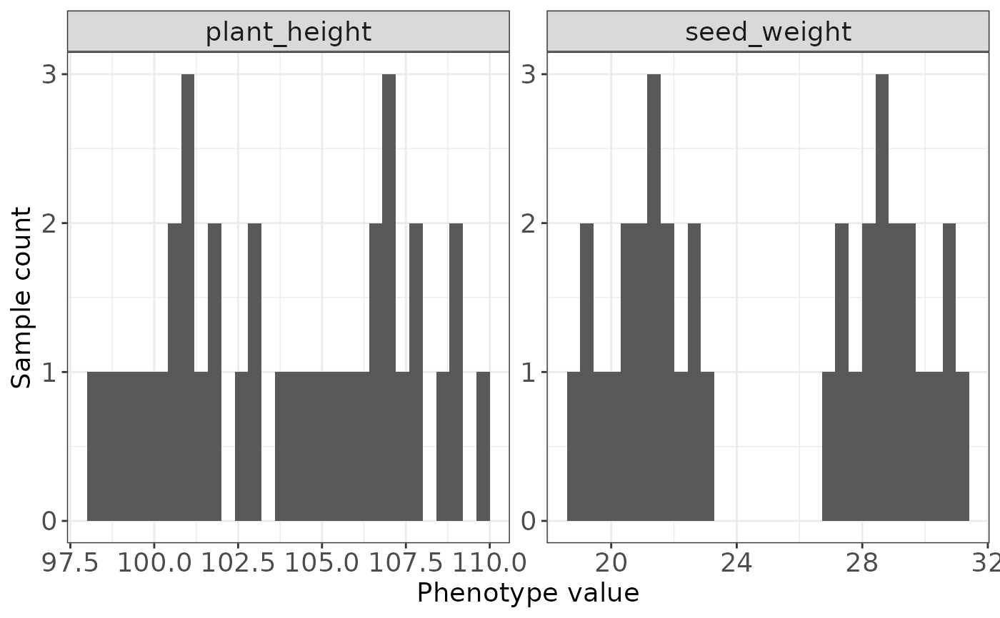

Reads a phenotype table where the first column contains taxa/sample IDs and all remaining columns are phenotype traits.
Usage
read_pheno(
file,
sep = "auto",
sample_col = NULL,
na_strings = c("NA", "NaN", "", ".", "null", "NULL"),
verbose = TRUE,
progress = interactive() && isTRUE(verbose)
)Arguments
- file
Phenotype file path.
- sep
Field separator. Use
autofor automatic detection byfread().- sample_col
Optional sample column name. If NULL, the first column is used.
- na_strings
Strings treated as missing values.
- verbose
Logical. Whether to print reading messages.
- progress
Logical. Reserved for future compact progress display.
Examples
pheno_file <- system.file("extdata", "gtr_demo_pheno.tsv", package = "GeneTrackR")
pheno <- read_pheno(pheno_file, verbose = FALSE)
head(pheno)
#> sample_id seed_weight protein_content plant_height flowering_time
#> <char> <num> <num> <num> <int>
#> 1: S19 28.8 43.58 106.2 43
#> 2: S01 18.8 37.58 98.2 43
#> 3: S28 26.8 43.58 104.2 43
#> 4: S10 20.8 37.58 100.2 43
#> 5: S20 29.2 43.72 106.8 44
#> 6: S02 19.2 37.72 98.8 44
#> flower_color
#> <char>
#> 1: Purple
#> 2: Purple
#> 3: Purple
#> 4: Purple
#> 5: White
#> 6: White
summary_pheno(pheno)
#> trait type sample_n missing_n missing_rate unique_n min
#> <char> <char> <int> <int> <num> <int> <num>
#> 1: seed_weight numeric 36 0 0 32 18.80
#> 2: protein_content numeric 36 0 0 18 37.58
#> 3: plant_height numeric 36 0 0 36 98.20
#> 4: flowering_time numeric 36 0 0 5 43.00
#> 5: flower_color categorical 36 0 0 2 NA
#> mean median max
#> <num> <num> <num>
#> 1: 25 25 31.20
#> 2: 41 41 44.42
#> 3: 104 104 109.80
#> 4: 45 45 47.00
#> 5: NA NA NA
plot_pheno(pheno, traits = c("plant_height", "seed_weight"))
